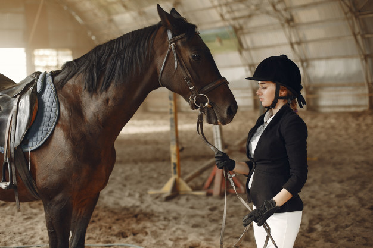
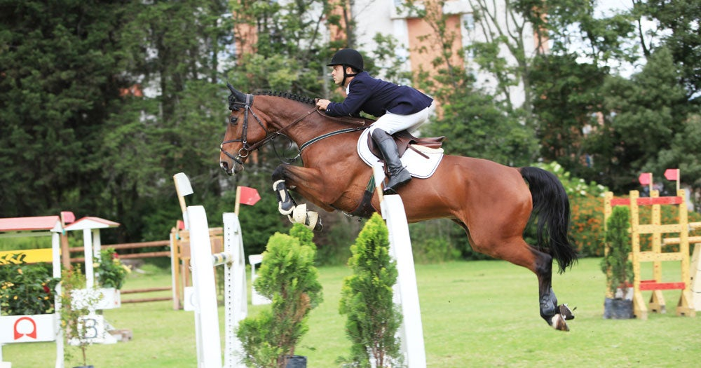

¿Qué es la equitación?La equitación es el arte de montar a caballo, una especialidad dentro de los deportes ecuestres, y en ella se evalúa tanto al jinete como al caballo. |
 |
|  | ¿Qué beneficios ofrece?La equinoerapia ha resultado ser muy eficaz en el tratamiento de ciertas enfermedades, como el autismo. Pero la práctica de la equitación puede ser muy beneficiosa para cualquiera. La práctica regular de este deporte ayuda a superar miedos, gestionar problemas y coger confianza. Esto se debe a que para controlar un animal como el caballo es imprescindible gestionar todas las situaciones con calma pero con firmeza y responsabilidad. Además montar a caballo requiere disciplina y concentración, dos actividades muy saludables para la mente. El contacto con la naturaleza y la compenetración con un animal terminan de aportar todo aquello que necesitamos para desconectar y relajarnos. |